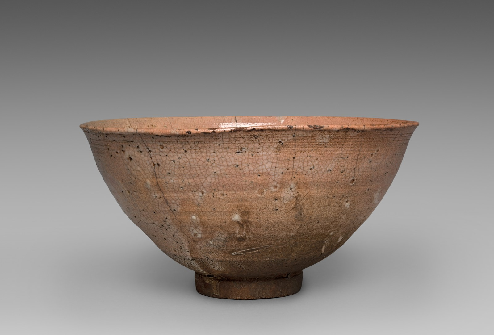

CERAMICS / KARATSU
佐賀県・唐津など
唐津焼 — ごはんを盛って、器の表情を楽しむ
料理を盛る前と後で、器の見え方が変わる。唐津焼を選ぶなら、空の器の美しさに加えて、食べ物との組み合わせを想像してみませんか。

Gift of Iwao and Takako Setsu in honor of Dr. and Mrs. Sherman E. Lee. · 縮小・圧縮のみ。トリミングなし。
写真は産地の作例です。以下で紹介する現代の作り手の作品写真とは異なります。
01 / LOOK CLOSER
まずは、自分の感覚から
ざらりとした土の表情、釉薬の色、筆の線。気になる要素を一つ選んで見ると、知識がなくても比べやすくなります。料理を覆うような模様か、そっと背景になる色か。使うときの自分の好みが、器を見る手がかりになります。
02 / MAKERS TODAY
隆太窯 / Ryutagama
隆太窯の公式紹介には、中里隆、中里太亀、中里健太の歩みが掲載されています。世代の異なる作り手が関わる窯を、日用の器から眺めてみましょう。公式店で形や釉調を見比べ、作り手の名前と作品を結びつけることが、産地名の先へ進む一歩です。
公式の作品写真・紹介を見る ↗03 / AT YOUR TABLE
今日の食卓で、試してみる
以下はKOTOによる組み合わせの提案です。
一汁一菜
茶碗と副菜の器だけを唐津に。お盆や汁椀は手持ちのものを使います。
週末のおつまみ
小皿に少量ずつ。余白に見える土や釉薬の表情も楽しみます。
焼き菓子とお茶
小さな皿にクッキーを。和食以外にも組み合わせを広げてみます。
選ぶときに、確かめたいこと
茶碗は手に持ったときの高台、皿は汁気を受け止める深さを確認。掲載写真は歴史的な作例で、隆太窯の現行作品とは別のものです。
04 / EXPLORE THE REGION
産地につながる
唐津焼総合展示場・販売場は、複数の窯元を比べる入口になります。まずここで気になる表現を見つけ、その窯元の案内へ進む方法も。展示や窯元訪問の条件は、最新の公式案内で確かめましょう。
唐津焼協同組合・総合展示場 / Karatsu pottery cooperative gallery ↗産地の背景・出典について
土の表情を生かした作風や、茶陶としての歩みをもつ唐津焼。多様な成形・装飾の技法があるため、名前だけでひとつの姿を思い描くより、実物の質感を確かめながら出会いたい器です。
作り手・地域の情報はリンク先の公式資料を参照し、2026年11月8日に確認しました。見方や食卓の提案は編集文です。取材記事や作り手による推薦ではありません。訪問条件や製品仕様は各公式案内でご確認ください。